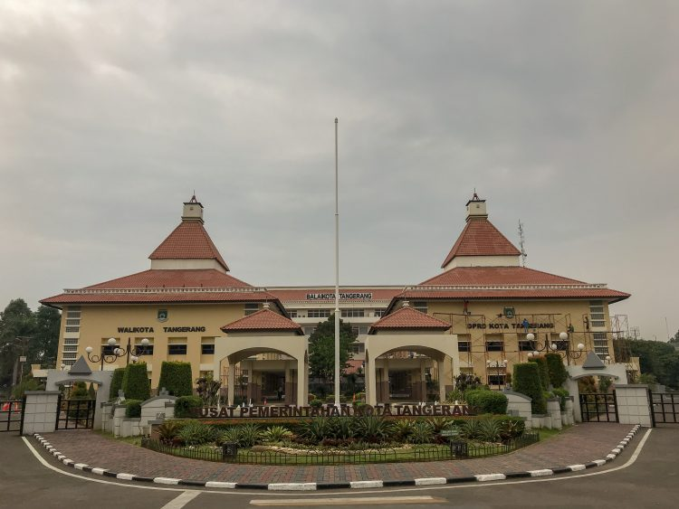
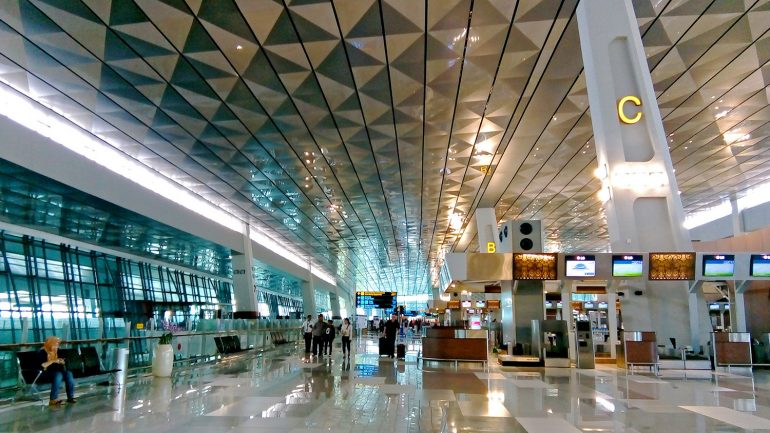
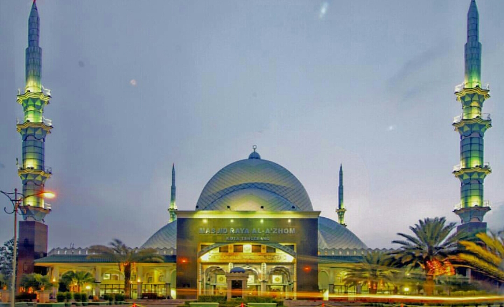
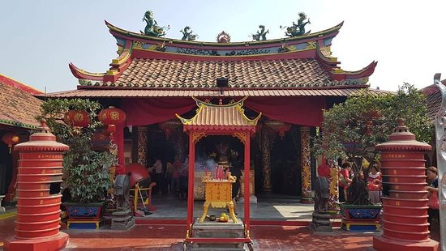
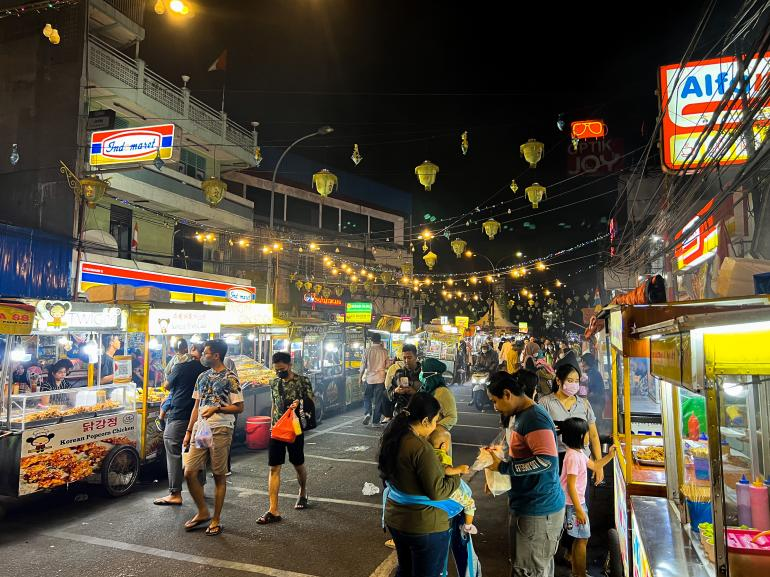

Sejarah

Kesultanan Banten menciptakan negara besar di sebelah barat Sungai Untung Jawa, menyebabkan 5.000
hingga 6.000 penduduk mengungsi. Pada tahun 1668, Raden Sena Pati dan Kyai Demang diangkat menjadi
penguasa, namun dipecat oleh Sultan. Pangeran Dipati diangkat ke wilayah tersebut, dan Ki Demang
mengadu Banten melawan VOC, namun ia terbunuh di Kademangan.
Pada tahun 1680, Kyai Dipati Soera Dielaga diangkat menjadi Bupati Tangerang I yang meliputi Sungai
Angke dan Sungai Cisadane. Ia dan pengiringnya diberi tempat di sisi timur sungai, berbatasan dengan
VOC. Soeradilaga dan ahli perangnya berhasil memukul mundur pasukan Bantenesu, dan diberi gelar
kehormatan Raden Aria Suryamanggala.
Dengan perjanjian yang ditandatangani pada tanggal 17 April 1684, Tangerang menjadi wilayah VOC.
Wilayah kekuasaan bupati diperluas hingga ke sebelah barat sungai Tangerang, dan ditambah pos
penjagaan untuk memantau wilayah tersebut. Pos tertua terletak di muara Sungai Cisadane, namun pos
baru didirikan di muara Sungai Tangerang.
Pagar wallei dibangun mengelilingi bangunan di pos penjagaan, dan benteng baru dibangun dengan
tembok setebal 20 kaki. Benteng ini diawaki oleh 60 orang tentara Eropa, 30 orang kulit hitam, dan
orang Makassar, dan kemudian menjadi markas VOC dalam menghadapi pemberontakan Banten.
Pada bulan Oktober 1945, Laskar Hitam, sebuah milisi Muslim, didirikan di Tangerang. Tujuan gerakan
ini adalah mendirikan negara Islam di Indonesia. Gerakan ini kemudian menjadi bagian dari kelompok
pemberontak DI/TII. Pada tanggal 31 Oktober 1945, Laskar Hitam menculik Otto Iskandardinata, Menteri
Negara Republik Indonesia. Ia diduga dibunuh di pantai Mauk, Tangerang pada tanggal
20 Desember 1945.
Ekonomi

Tangerang adalah pusat manufaktur dan industri di Pulau Jawa dan memiliki lebih dari 1000 pabrik.
Banyak perusahaan-perusahaan Internasional yang memiliki pabrik di kota ini.
Pada kota ini juga berlokasi bandara internasional tersibuk di Indonesia, yaitu Bandara Internasional Soekarno-Hatta.
Dalam beberapa tahun terakhir, perluasan urban Jakarta meliputi Tangerang, dan akibatnya banyak
penduduknya yang berkomuter ke Jakarta untuk kerja, atau sebaliknya. Banyak kota-kota satelit kelas
menengah dan kelas atas sedang dan telah dikembangkan di Tangerang, lengkap dengan pusat
perbelanjaan, sekolah swasta dan mini market.
Geografis

Kota Tangerang terletak di wilayah barat laut Provinsi Banten dan berada di sisi utara Pulau Jawa.
Kota Tangerang memiliki luas wilayah 164,55 km2.
Kota ini berbatasan dengan Kabupaten Tangerang di barat dan utara, Tangsel di selatan, dan Jakarta
di timur. Sungai Cisadane yang melintasi Kota Tangerang.
Kota Tangerang dilintasi oleh salah satu sungai terbesar di sebelah barat Pulau Jawa yaitu Sungai
Cisadane. Sungai ini merupakan bagian yang tidak terpisahkan dari identitas Kota Tangerang. Hulu
sungai ini terletak di lereng Gunung Salak dan Gunung Pangrango, Bogor.
Wisata
Masjid Raya Al-Azhom

Masjid Raya Al-Azhom adalah masjid yang berlokasi di alun-alun Tangerang. Dibuka pada tahun
2003, ini adalah masjid terbesar di provinsi Banten.
Dengan kapasitas maksimum 15.000 jamaah, ini adalah salah satu masjid terbesar di dunia.
Boen Tek Bio

Boen Tek Bio adalah kelenteng Tionghoa tertua di Tangerang. Letaknya di sudut Jalan Bhakti dan
Jalan Cilame di jantung Pasar Lama, kawasan pasar lama Tangerang.
Didirikan pada tahun 1684, Boen Tek Bio merupakan bagian hakiki dari sejarah Tangerang,
khususnya sejarah pemukiman Tionghoa di wilayah tersebut. Bagian tertua dari bangunan ini
dibangun pada tahun 1775. Kuil ini mengalami
renovasi besar-besaran pada tahun 1844 dengan penambahan sayap kanan dan kiri pada tahun 1875,
dan halaman dalam pada tahun 1904.
Boen Tek Bio memiliki sejarah panjang hubungan dengan birokrasi kolonial Tionghoa ('Kapitan
Cina') di Tangerang. Para donatur untuk pekuburan candi pada tahun 1878 termasuk seluruh perwira
Tionghoa yang menjabat di Tangerang.
Kawasan Kuliner Pasar Lama

Di Pasar Lama sendiri, pengunjung yang datang akan dimanjakan oleh berbagai macam jenis kuliner
lezat seperti ketoprak, bakso, nasi goreng, otak-otak ikan,
sempol ayam, lumpia basah, telur gulung, serabi durian, dan berbagai macam varian makanan
lainnya. Selain itu, pengunjung juga dapat mencoba beberapa kuliner legendaris khas daerah
tersebut yang telah
berjalan hingga puluhan tahun lamanya seperti Nasi Uduk Encim Sukaria, Sate Ayam Haji Ishak, Es
Podeng Varia, hingga Es Bun Tin.